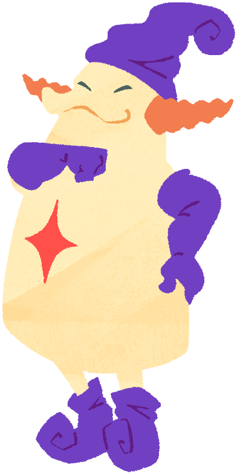

Naporon (Male)From the Kansai region, he is a charismatic sentient playing card who is popular because of the way he talks. His fanbase is slowly increasing over time, with his magic tricks mostly playing out well. He's the third shopkeeper in Kururin Squash! He also made a cameo in Master of Illusion (EU: Magic Made Fun), another game made by Eighting for the Nintendo DS. |
 |